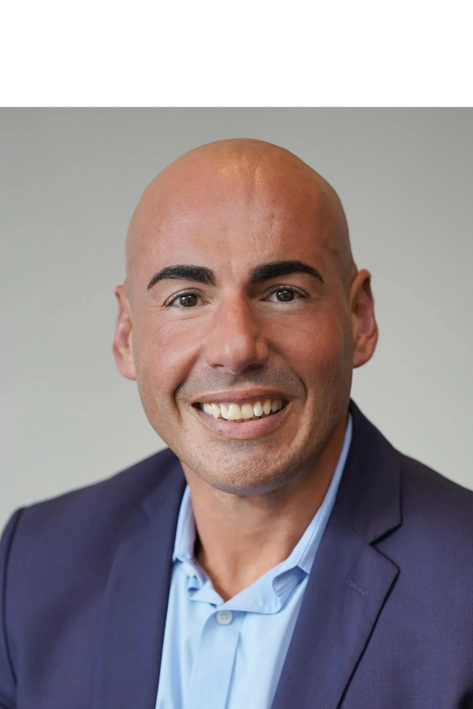

Co-founder · Executive Chairman
Dr. David R.P. Almeida, MD, MBA, PhD
President & CEO, CASExGLOBAL · Founder of Erie Retina Research
Board-certified ophthalmologist and vitreoretinal surgeon serving as President and CEO of the Centers for Advanced Surgical Exploration (CASExGLOBAL) and founder of Erie Retina Research — a clinical research organization offering cutting-edge surgical and pharmaceutical ophthalmic research. His research interests span age-related macular degeneration, diabetic eye diseases, complex surgical techniques, and practice management efficiency.
Dr. Almeida has served as principal investigator on 75+ clinical trials at Erie Retina Research, ranging from preclinical to Phases 1 through 4. He sponsors new clinical trials utilizing the ClinOmicsAI platform to identify biomarkers of retinal disease and evaluate individual patient responses through molecular proteomic signatures. He has published over 200 peer-reviewed articles, delivered more than 250 national and international conference and keynote presentations, and was recently selected for Drivers of Change: The Ophthalmologist Power List — highlighting the 50 most influential figures shaping the future of eye care.
- President & CEO, CASExGLOBAL · Founder of Erie Retina Research
- The Ophthalmologist Drivers of Change Power List Top 50
- 200+ peer-reviewed publications · 250+ conference and keynote presentations
- Numerous awards from the American Society of Retina Specialists and the American Academy of Ophthalmology
- BS (Honors), University of Toronto · PhD (Pharmaceutical Drug Research), University of Szeged · MBA (Healthcare Management), The George Washington University · MD & Ophthalmology Residency, Queen's University · Vitreoretinal Disease & Surgery Fellowship, University of Iowa